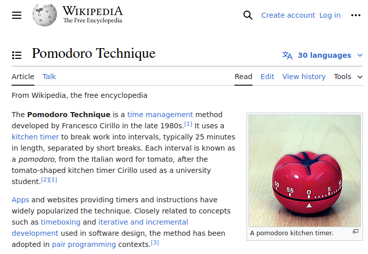

Probably working on a Turbo/Borland Pascal program, in a text-only interface, on a PC running MS-DOS.
I suppose in 1994, it could have been running Windows 3.1, but I don't recall.
The Graphical user interface has largely replaced the earlier text-based UIs.
The term Graphical User Interface may have been used more in the past to make the distinction between this new style versus the text-based user interfaces common at the time GUIs were introduced more widely.
Desktop applications
Web browser / applications
Highly interactive
There are multiple options for creating GUIs in Python:
Web applications are also GUIs, and Python has many options for creating them:
PgAdmin4 is an example of a web application that can run locally or on a server.
"pgAdmin 4 is a complete rewrite of pgAdmin, built using Python and Javascript/jQuery. A desktop runtime written in NWjs allows it to run standalone for individual users, or the web application code may be deployed directly on a web server for use by one or more users through their web browser."
If you're building a web, or mobile, application, the answer is yes (by default).
If you're building a utility that will run on a local machine, the answer is it depends.
prompt=
You like doing things in the console/terminal.
Your application could use more than command line input, but doesn't warrant a full desktop or web GUI.

Episode #336 - Terminal magic with Rich and Textual
Episode #380 - 7 lessons from building a modern TUI framework
Episode #299 - Will McGugan drops by
Episode #80 - Make Your Python App Interactive With a Text User Interface (TUI)
Article: Python Community Interview With Will McGugan
"Rich is a Python library for rich text and beautiful formatting in the terminal."
bloomberg/memray: Memray is a memory profiler for Python
Textualize/frogmouth: A Markdown browser for your terminal
Class and Id: DOM Queries
TCSS: Textual CSS

Tick, tick, tick... RING!

This one beeps when it's done, but doesn't tick the whole time.
It can be set to blink quietly.
Well, it can be, if you want.

I use git for source code management.
Some projects are on GitHub. Others are pushed to a local git server.
Some projects, such as one-off utility scripts, are not in git at all, but are backed up locally (and off-site).
"pipx is made specifically for application installation, as it adds isolation yet still makes the apps available in your shell: pipx creates an isolated environment for each application and its associated packages."
I have been using pipx to install Python command-line applications (not libraries).
I use pipx to install some Python tools.
pipx install hatch
pipx install pgadmin4
I also like to install my own tools, outside of development, using pipx.
pipx install pomodorable
Packages don't have to be on PyPI, but you have to specify the path to a .whl file. One uploaded to a GitHub release will work.
pipx install image_snip@https://github.com/wmelvin/image-snip/releases/download/v2024.03.1/image_snip-2024.3.1-py3-none-any.whl
A .whl file uploaded to a web hosting platform will also work.
pipx install gitramble@https://bogusoft.com/packages/gitramble/gitramble-0.1.dev1-py3-none-any.whl
"
justis a handy way to save and run project-specific commands. Commands, called recipes, are stored in a file calledjustfilewith syntax inspired bymake..."
I learned about just looking at some of Simon Willison's projects on GitHub. I saw a file named Justfile and wondered what it does.
When planning a project, it is good to think about potential showstoppers.
Is what you want the project to do actually possible.
Are there capabilities needed for the application to succeed that are not available in the language, framework, or platform?
For a Pomodoro Timer application to be useful, it needs to notify you when the countdown is finished.
It was encouraging to see that Textual has a Toast widget. Unfortunately, Textual's Toast widget only pops up in the terminal. I want a system notification.
Searching for a Python package to do system notifications turned up a few. Some were Windows-only. Some required installing additional system packages.
I settled on plyer:
Python script toasty
Ran on:
Running hatch init creates scaffolding for a Python project.
LICENSE and README filesI made some edits before doing the initial git commit.
Bindings are declared in the App class.
Actions are implemented with the method name starting with action_ followed by the action defined in the BINDINGS list.

The action descriptions show in the app's Footer.
Some options are CLI-only
Otherwise run the UI
Textual Guide: Testing
Snapshot testing for Textual apps: pytest-textual-snapshot
Data CSV - Stored in user app data location.
Daily CSV - Aligns with the layout of the spreadsheet I've been using for years.
Daily Markdown - Written to an Obsidian Daily Notes file.
Not sure why this happened, but I suspect I was misusing the timer event and reactivity.
By default Ubuntu does not write core-dump files for user packages, so there was not one to look at (as if I'd know what I was looking at ;)
Some commits to look at (maybe):
Some aspects to look at in the code:
textual run --dev to see TCSS changes live.Gotchas
Here are a few things I may (or may not) do with the Pomodorable app:
Add a function to play a sound when a session is finished - maybe the sound of the classic kitchen timer ringing.
Create an alternate AppData class that talks to a web API instead of the file system. That would require a web back-end, perhaps built using FastAPI.
You can find more of my ramblings in my "stuff" repo on GitHub.